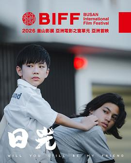

中国内地
MAINLAND811:00定档NEW · 11:00已核实 · 1 来源《目不转睛》吴星星自编自导自剪的极致小成本悬疑片定档 9 月 17 日，全组不足 20 人、拍摄仅 18 天，导演放话「票房破亿送十台宝马」。媒体 · 北京日报查看物料与原始信源
吴星星执导的极致小成本悬疑片《目不转睛》定档 9 月 17 日。导演一人兼任编剧、剪辑等九大核心岗位，全剧组不足 20 人、拍摄仅用 18 天，以真诚表达和独特创意切入 9 月银幕。导演在路演中豪言「票房破亿送十台宝马」，噱头十足。
聚焦一名患抑郁症女孩的治愈历程，以独特创意与个人化真诚表达切入 9 月银幕（北京日报披露）。
09:00上映NEW · 09:00已核实 · 1 来源《怪屋》王博伦执导、傅菁领衔的悬疑惊悚片《怪屋》9 月 4 日上映，此前在第十六届北京国际电影节「北京展映」单元获「观众选择影片」荣誉。媒体 · 新黄河 / 影视好评日报查看物料与原始信源
王博伦执导、傅菁领衔的悬疑惊悚片《怪屋》9 月 4 日全国上映，以「凶宅试睡」展开，此前在第十六届北京国际电影节「北京展映」单元获「观众选择影片」荣誉。本周在映，补录。
以「凶宅试睡」展开的悬疑惊悚片，傅菁领衔主演（公开片方物料）。
15:40定档NEW · 15:40已核实 · 1 来源《热血部落》四川美术学院联合出品的 AI 动作电影《热血部落》定档 9 月 8 日，登陆爱奇艺、优酷等平台全网播出，多名研究生参与 AI 视觉与数字角色生成。媒体 · 上游新闻查看物料与原始信源
9 月 6 日，四川美术学院披露：由该校中国艺术创作数字影像中心联合云南秀叭巴电影制作有限公司打造的 AI 动作电影《热血部落》，将于 9 月 8 日登陆爱奇艺、优酷等平台全网播出。创作过程中多名研究生深度参与 AI 视觉设计、场景概念设计、数字角色生成等核心环节。
聚焦西南边陲原始部落的抗争：中原时局动荡之时，居于西南雨林的翁卡部落民风质朴、世代安居；随着石爪部落崛起并持续扩张，翁卡屡遭侵扰、族人深陷困顿。危急关头，部落勇士木朗格挺身而出，凭精湛箭术与丛林作战经验深入险境反击，多次击退入侵势力、营救被俘族人（上游新闻披露）。
16:00定档NEW · 16:00已核实 · 1 来源《老师您辛苦了》改编自潮汕教师真实经历的《老师您辛苦了》9 月 7 日起全国点映、9 月 13 日公映，9 月 5 日晚已在上海影城举行首映礼。媒体 · 上海长宁查看物料与原始信源
电影《老师您辛苦了》9 月 5 日晚在上海影城举行首映礼。影片改编自潮汕教师真实经历，聚焦基层教师坚守与青少年成长，已入围电影频道「最受媒体关注教育」单元及澳门国际儿童电影节金童奖，将于 9 月 7 日起全国点映、9 月 13 日正式公映。
改编自潮汕教师真实经历，聚焦基层教师坚守与青少年成长（上海长宁披露的首映礼信息）。
19:30开播NEW · 19:30已核实 · 1 来源《交锋》国安反谍剧《交锋》今日 19:30 登陆 CCTV-8 黄金档与腾讯视频，王凯、彭昱畅、欧豪、周依然领衔，改编自世纪之交真实泄密大案。媒体 · 央视新闻 / 澎湃新闻延续 · 9/2 曾报·定档
由国家安全部主导创作、王凯、彭昱畅、欧豪、周依然领衔，祖峰、吴越特别出演的国安反谍剧《交锋》9 月 6 日 19:30 登陆 CCTV-8 黄金强档与腾讯视频。剧集改编自世纪之交真实泄密大案，王凯饰演国安侦查员马憩、彭昱畅饰演新人徒弟，两代人横跨二十年追查欧豪饰演的代号「北风」的境外间谍头目。
改编自世纪之交真实泄密大案，以国安侦查员与境外间谍头目的二十年追查为主线，双时空叙事融合悬疑与正剧气质（澎湃新闻）。
11:40定档NEW · 11:40单一来源 · 待确认 《猎罪现场》悬疑刑侦剧《猎罪现场》定档 9 月 7 日优酷独播，黄俊捷、郑晓宁领衔，以沉浸式心理侧写破案为特色。媒体 · 今日头条查看物料与原始信源
《猎罪现场》悬疑刑侦剧《猎罪现场》定档 9 月 7 日优酷独播，黄俊捷、郑晓宁领衔，以沉浸式心理侧写破案为特色。媒体 · 今日头条查看物料与原始信源
由麦浩邦执导、黄俊捷、郑晓宁领衔的悬疑刑侦剧《猎罪现场》定档 9 月 7 日优酷独播。主角韩宁年少失怙、姐姐于七年前离奇绑架案遇害，立志成为刑警并拥有过人的犯罪侧写能力；进入重案二队后，单元案件层层指向七年前旧案，众人与幕后黑手不断周旋。
主角韩宁立志成为刑警、拥有过人犯罪侧写能力，进入重案二队后单元案件层层指向七年前旧案，与幕后黑手不断周旋（今日头条）。
10:00新物料NEW · 10:00已核实 · 1 来源《兰香如故》古装宅斗剧《兰香如故》9 月 6 日发布「一芳寻真」制作特辑，谭松韵、刘学义领衔，9 月 11 日锁定 CCTV-8 与腾讯视频。媒体 · 官博 / 今日头条延续 · 9/4 曾报·定档查看物料与原始信源
由谭松韵、刘学义领衔，牛骏峰、郭柯宇等实力派加盟的古装宅斗剧《兰香如故》9 月 6 日发布「一芳寻真」制作特辑。剧集改编自小说《兰香缘》，讲述落难贵女沈嘉兰顶替丫鬟许兰香入林府求生，从底层逆袭执掌内宅、再与昔日未婚夫重新纠缠的成长故事。9 月 11 日起 CCTV-8 与腾讯视频独播。
改编自小说《兰香缘》，落难贵女沈嘉兰顶替丫鬟许兰香入林府求生，从底层逆袭执掌内宅、再与昔日未婚夫重新纠缠（公开物料）。
21:30收官NEW · 21:30单一来源 · 待确认《醒来》赵宝刚执导、欧豪与古力娜扎主演的谍战剧《醒来》9 月 5 日晚在央视八套收官，全剧 22 集，收官阶段口碑出现反转。媒体 · 影视小锄头查看物料与原始信源延续 · 9/4 曾报·定档 / 9/5 曾报·首播
由赵宝刚执导、欧豪与古力娜扎主演的谍战剧《醒来》于 9 月 5 日晚在央视八套收官，全剧 22 集。该剧 8 月 26 日在 CCTV-8 首播，9 月 8 日起登陆北京卫视与江苏卫视。据影视类自媒体「影视小锄头」统计，大结局收视峰值冲至 2.32%，并称剧名「醒来」的三层含义至结局才真正扣题——开播时被劝退的观众在结局阶段集体「破防」。相关收视数字尚未见官方发布口径核实。
中国港澳台
HK / MACAU / TAIWAN214:00新物料NEW · 14:00已核实 · 1 来源《希望》罗泓轸执导、黄政民赵寅成主演的科幻惊悚片《希望》发布中国香港正式预告，9 月 10 日香港上映（台湾 9 月 4 日已开画），并作为 2026 香港夏日电影节开幕电影。媒体 · 新浪电影
入围第 79 届戛纳电影节主竞赛单元的科幻惊悚片《希望》由罗泓轸执导，黄政民、赵寅成、郑好娟主演，并邀迈克尔·法斯宾德、艾丽西亚·维坎德跨海助阵。影片设定在守备森严的非军事区附近小镇「希望港」，一则「猛虎出没」的传说引发警长警觉与社区骚动，并衍生成更深不可测的谜团。中国台湾 9 月 4 日、中国香港 9 月 10 日上映。
设定在守备森严的非军事区附近偏远小镇「希望港」，一则「猛虎出没」的传说引爆小镇恐慌，居民须直面未知（新浪电影）。
16:20发行NEW · 16:20已核实 · 2 来源
《日光》（Will You Still Be My Friend）中国台湾与新加坡合拍、吕柏勋执导的首部剧情长片《日光》由法国 Moveria 拿下国际销售，此前已入围圣塞巴斯蒂安新导演竞赛。媒体 · Variety / 好威映象查看物料与原始信源

9 月 6 日，Variety 报道法国销售公司 Moveria 已接手中国台湾导演吕柏勋首部剧情长片《日光》（Will You Still Be My Friend）的国际销售。影片为中国台湾与新加坡合拍，此前入围第 74 届圣塞巴斯蒂安国际电影节「新导演竞赛」单元，为本届该单元唯一入选的中国台湾作品，并入选 2026 釜山国际电影节「亚洲电影之窗」单元；由好威映象发行，预计年底前在中国台湾上映。
13 岁少年俊佑（王杰登 饰）与从新加坡搬来的少年彦霆（雷丰铭 饰）成为秘密好友。彦霆的父亲在当地从事光电开发，一家人搬回中国台湾后与村民产生严重嫌隙。随着村内因光电投资引发的抗争与冲突不断加剧，大人之间的仇恨与矛盾最终波及孩子，也让两人原本纯真的友情出现裂痕（影展 / 发行方公开简介）。
海外
INTERNATIONAL515:00定档NEW · 15:00已核实 · 1 来源《复仇者联盟4：终局之战》重映漫威《复仇者联盟4：终局之战》「加码臻享版」定档 9 月 25 日中秋档重映，新增约 4 分钟未公开片段（定制开场 + 未公开正片 + 片尾彩蛋）。媒体 · 北京日报 / Moviefone
漫威《复仇者联盟4：终局之战》（Avengers: Endgame）「加码臻享版 / Encore」定档 9 月 25 日中秋档重映，新增约 4 分钟未公开片段，包含定制开场、未公开正片镜头与片尾特制彩蛋，以 IMAX 及大格式放映，为后续《复仇者联盟：末日之战》预热。
在《复仇者联盟3：无限战争》的毁灭性事件后，宇宙因灭霸而满目疮痍，幸存的复仇者再度集结，试图逆转灭霸的行动、复原宇宙秩序（公开剧情）。
13:00定档NEW · 13:00已核实 · 1 来源《起义》（The Uprising）保罗·格林格拉斯执导、安德鲁·加菲尔德主演的《起义》定档 9 月 10 日北美上映，取材 1381 年英国农民起义。媒体 · Rotten Tomatoes / Moviefone
保罗·格林格拉斯（《谍影重重》《93 航班》）执导、安德鲁·加菲尔德主演的《起义》（The Uprising）定档 9 月 10 日北美上映。影片取材于 1381 年英国农民起义的真实历史，讲述一名普通农夫在目睹不公后成为抵抗象征、掀起对抗年轻国王的叛乱。搭档卡司包括 Jamie Bell、Thomasin McKenzie 等。
取材 1381 年英国农民起义真实历史，一名普通农夫在目睹不公后成为抵抗象征，掀起对抗年轻国王的叛乱（Rotten Tomatoes 秋季片单）。
14:30上映NEW · 14:30已核实 · 1 来源《大熊雨林》中影 CINITY 专线引进的加拿大自然纪录电影《大熊雨林》9 月 5 日上映，呈现北美珍稀白灵熊栖息地。媒体 · 院线排片资讯
由 Rebekah Jorgensen、Ian McAllister 等执导的加拿大自然纪录电影《大熊雨林》（Great Bear Rainforest）9 月 5 日通过中影 CINITY 专线上映，聚焦北美太平洋海岸温带雨林与全球珍稀的白灵熊（灵熊）栖息地，以原生生态影像呈现「一片神奇的秘境，一万年未曾改变」。
聚焦北美太平洋海岸温带雨林与全球珍稀白灵熊栖息地，以原生生态影像呈现未被打扰的自然秘境（院线公开物料）。
15:10新物料NEW · 15:10单一来源 · 待确认《塞尔达传说》真人电影有爆料称《塞尔达传说》真人电影首支预告最快下周公开，恰在任天堂 40 周年纪念直面会之前；任天堂与索尼影业尚未官宣。媒体 · 游民星空查看物料与原始信源
9 月 6 日，美国电影行业内幕人士 Daniel Richtman 透露，任天堂与索尼影业合作的《塞尔达传说》真人电影首支预告最快可能在下周公开。这一时间点恰好落在任天堂《塞尔达传说》40 周年纪念直面会（北京时间 9 月 8 日 22:00，约 30 分钟）之前，任天堂另将于 9 月 9 日 22:00 举办常规直面会。截至目前任天堂与索尼影业均未公布预告发布日期，影片定档 2027 年 5 月 7 日北美上映。
17:00市场NEW · 17:00已核实 · 2 来源 《奥德赛》诺兰《奥德赛》全球票房破 16.5 亿美元暂列影史第十四；内地以约一成的排片贡献超两成票房，被评「排片产出倒挂」。数据 · 猫眼专业版 / 影视独舌查看物料与原始信源
《奥德赛》诺兰《奥德赛》全球票房破 16.5 亿美元暂列影史第十四；内地以约一成的排片贡献超两成票房，被评「排片产出倒挂」。数据 · 猫眼专业版 / 影视独舌查看物料与原始信源
截至 9 月 6 日，克里斯托弗·诺兰执导的《奥德赛》内地累计票房 6.55 亿元（上映 24 天），当日排片 1.86 万场、约占大盘 11%，却贡献 21.8% 的票房占比，位居单日榜首；同期《欢迎来龙餐馆》累计 20.55 亿、《八仙！》18.78 亿。影片全球票房已突破 16.5 亿美元，暂列影史第十四。影视独舌将其称为「排片产出倒挂」的口碑教科书，认为院线有望加仓。
行业观察
OBSERVATION209:44市场NEW · 09:44单一来源 · 待确认中秋档前最后一个周末票房速览中秋档（9/25）前最后一个完整周末，在映影片票房持续走高：昆汀导剪版《杀死比尔：血色全传》截至 9 月 6 日 9 时 44 分票房突破 2000 万；高空求生续作《坠落2：死点》上映两日总票房突破 1000 万；暑期档黑马《欢迎来龙餐馆》累计票房突破 16 亿、猫眼 9.7 分领跑近期口碑，同期《空枪》猫眼 9.6、《奥德赛》9.5 分。媒体 · 灯塔 / 猫眼专业版
中秋档（9/25）前最后一个完整周末，在映影片票房持续走高：昆汀导剪版《杀死比尔：血色全传》截至 9 月 6 日 9 时 44 分票房突破 2000 万；高空求生续作《坠落2：死点》上映两日总票房突破 1000 万；暑期档黑马《欢迎来龙餐馆》累计票房突破 16 亿、猫眼 9.7 分领跑近期口碑，同期《空枪》猫眼 9.6、《奥德赛》9.5 分。
15:00政策NEW · 15:00单一来源 · 待确认AI 生成微短剧须显著标识，平台启动治理《微短剧发展管理办法》9 月 1 日施行满一周后，AI 微短剧合规进入落地阶段：规定使用 AI 技术生成、制作的微短剧须在每集明显位置添加提示标识。红果短剧于近期发布《关于规范 AI 剧角色创作的公告》，明确 AI 角色创作应避免雷同、杜绝「千篇一面」，并启动高频 AI 脸、同质化及素材违规治理专项。媒体 · 光明网 / 红果公告
《微短剧发展管理办法》9 月 1 日施行满一周后，AI 微短剧合规进入落地阶段：规定使用 AI 技术生成、制作的微短剧须在每集明显位置添加提示标识。红果短剧于近期发布《关于规范 AI 剧角色创作的公告》，明确 AI 角色创作应避免雷同、杜绝「千篇一面」，并启动高频 AI 脸、同质化及素材违规治理专项。